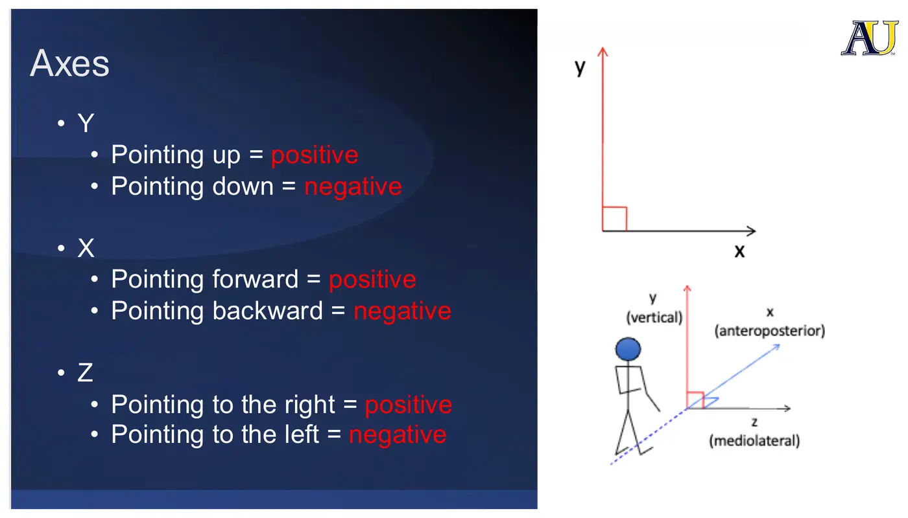
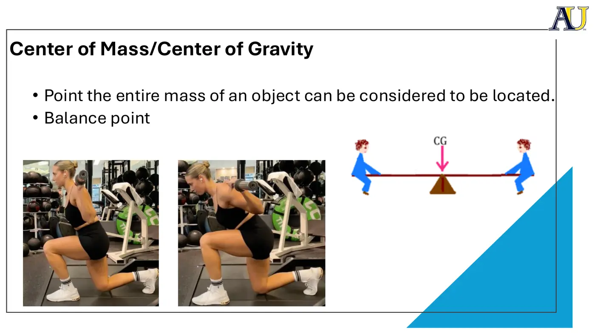
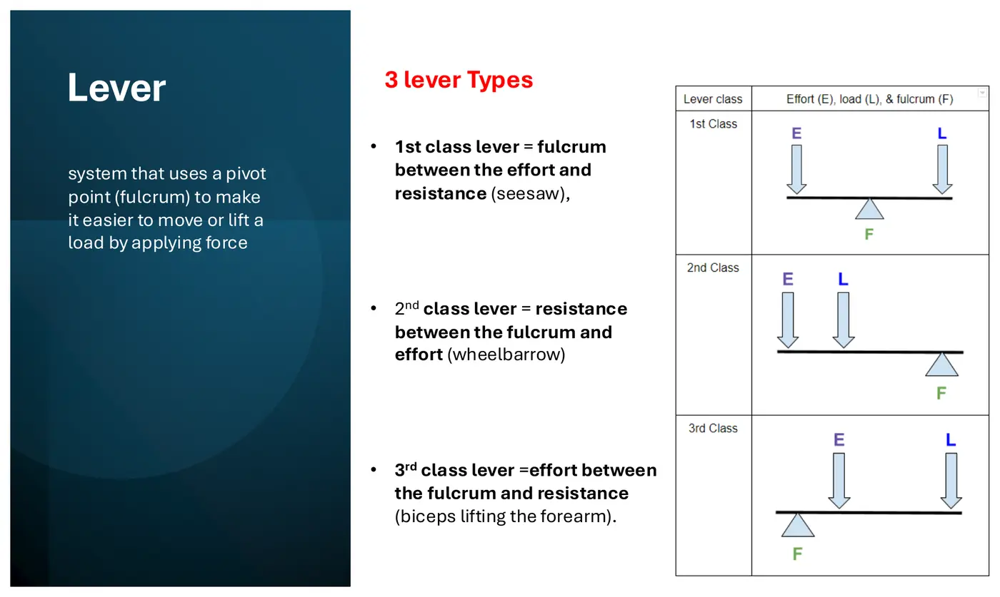
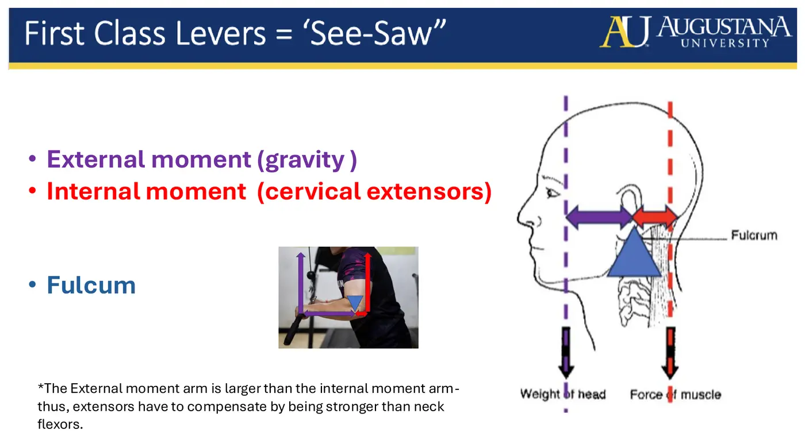
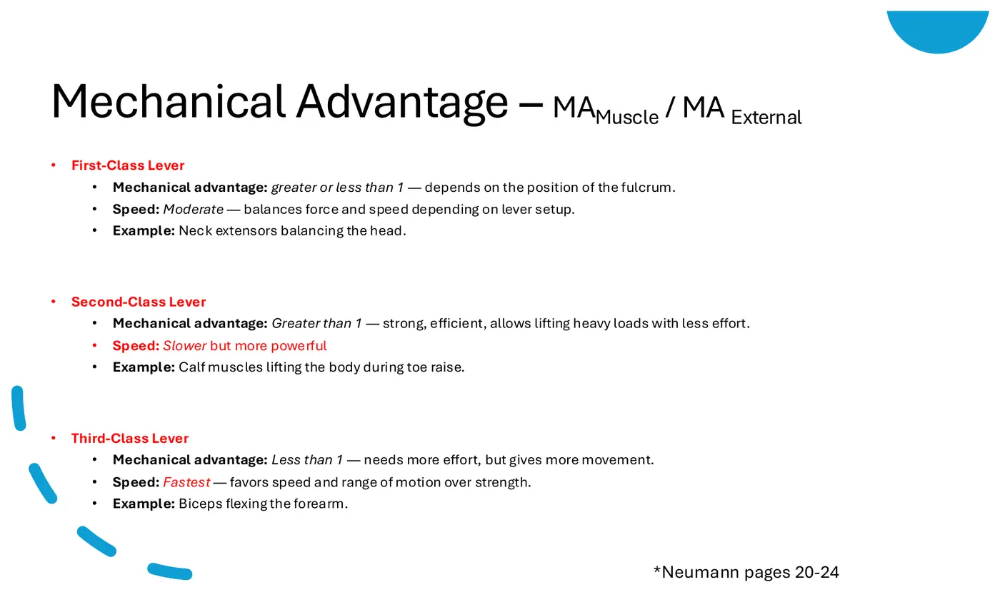

Therapeutic Interventions I · 6231
Module 1 — Biomechanical Concepts
Topics 1.1–1.4 + Sync Session 1 — physics, applied to human movement
📖 How to Use These Notes
- Best used with the lecture playing — keep these open, follow along, and add your own notes as you watch
- Lecture banners mark the start of each topic and run in the same order as the videos
- 🎙 Callouts = direct insights from the instructor's transcript
- ★ Tips = exam-relevant content or things the instructor told you to prepare
- Figures are taken directly from the module's slide decks
- Each topic ends with its own Quick-Reference Glossary
- Written from last year's recordings — if a lecture has been re-recorded or resequenced, Canvas wins
- Dr. Jake Awruch — four short asynchronous lectures (1:17, 7:47, 11:17, 7:18)
- The through-line for the whole module: biomechanics is what lets you progress and regress an exercise on purpose instead of just coaching good form
- Required reading: Neumann pg. 3–7, 11–20, 20–24 and 92–96
TOPIC 1.1
Why Does Biomechanics Matter?
Biomechanics is physics, now applied to human movement. In PT it shows up everywhere, but two places most obviously: progressing and regressing exercise (you manipulate forces using lever arms and different weights), and deciding which direction to mobilise a joint.
The questions Canvas asks you to sit with
- How is biomechanics essentially the application of physics to human movement, and why is that foundational to practice?
- When progressing or regressing an exercise, which biomechanical variables can you manipulate?
- How do changes in lever arms, external load placement, or body position change the forces at a joint?
- How does understanding biomechanics let you look past 'good form' and make intentional, skilled decisions?
⚠ One thing to correct on the Canvas page
- Topic 1.1's introduction says you would “mobilize the tibia anteriorly on the calcaneus” to increase dorsiflexion
- The talocrural (ankle mortise) joint is tibia on TALUS — the calcaneus sits below it at the subtalar joint
- And to gain dorsiflexion you glide the talus posteriorly on the tibia (equivalently, the tibia anteriorly on the talus)
- Module 3 Topic 3.4 gets this right, naming the talocrural joint as the target. Read the two together and trust Module 3
The Case That Opens the Course
Emelie is a 36-year-old female with right knee pain. She only feels it when she squats past 90°. Your CI explains that forces at the knee are much higher as squat depth increases. How can Emelie modify this exercise to perform it with less pain, and why do those modifications make it more appropriate for her?
Quick-Reference Glossary — Topic 1.1
| Term | Definition |
|---|---|
| Biomechanics | The study of human movement and the physics related to it |
| Progression | Making an exercise harder — usually by lengthening a moment arm, adding load, or changing position |
| Regression | Making an exercise easier — usually by shortening a moment arm or reducing load |
TOPIC 1.2
Describing Movement Using Biomechanical Terminology
Objectives: describe planes of motion, axes of rotation, and location of the centre of mass.
When you observe a patient you are watching the overall motion, but that motion is a collection of segmental motions at each joint — almost like a bike chain, where each joint has its own movement. For any joint, ask: what plane, what axis, where is the centre of mass.
1. Qualitative vs Quantitative
| QUALITATIVE | QUANTITATIVE |
|---|---|
| Description without numbers | Description with numbers |
| Strong or weak · hyper or hypo · fast or slow | 180° of shoulder flexion · 5/5 MMT |
| In clinic: “Your strength is improving” | In clinic: “You've improved from 3+/5 to 4/5 on manual muscle test” |
Sarah, 23, left knee pain seven days after ACL repair. PROM measured at −5° to 70° of flexion. Four weeks later she says: *“I still feel weak and my knee is still tight. Do you know if I'm any stronger than when we started?”*
The answer is BOTH — and here's why neither works alone
- Quantitative first: you need two numbers to compare — previously −5° to 70°, now perhaps −1° of extension to 95° of flexion
- Then qualitative: Sarah is an accountant and doesn't know what those numbers mean. “That's an improvement in the flexibility of your knee — you've increased your range of motion”
- Flip it and it fails: say only “your knee bends better than before” and Sarah asks how you know. You can't answer “it looks better” — you need the number to back it up
2. Axes of Rotation
Joints move around axes, the way a door moves around a hinge.

| Axis | Direction | Positive | Negative |
|---|---|---|---|
| Y | Vertical | Up | Down |
| X | Forward and backward | Forward | Backward |
| Z | Left to right | Right | Left |
3. Anatomical Planes
| Plane | Rotates around | Axis | Examples |
|---|---|---|---|
| Frontal / coronal | An anterior-to-posterior (forward-backward) axis | X | Jumping jacks · shoulder abduction · hip abduction |
| Transverse / horizontal | A vertical axis | Y | Hip rotation · shoulder horizontal abduction |
| Sagittal | A medial-lateral (left-right) axis | Z | Running · most flexion and extension in the body · shoulder flexion/extension |
4. Centre of Mass
The point where most of the mass of an object or person is located — the balance point. Clinically it's a lever for modifying exercise.

| Position | Where the centre of mass sits | Who does the work | Use it when… |
|---|---|---|---|
| Upright | Behind the knee | More force from the quadriceps | You want to target quads |
| Leaning forward | Closer to the knee, further from the hip | More force from the glutes | You want to target glutes — and plausibly less knee pressure, so less pain with lunging |
Quick-Reference Glossary — Topic 1.2
| Term | Definition |
|---|---|
| Segmental motion | The movement occurring at each individual joint that together make up the overall motion |
| Qualitative description | Movement described without numbers |
| Quantitative description | Movement described with numbers |
| X / Y / Z axis | Forward-backward / vertical / left-right |
| Frontal plane | Movement around an anterior-posterior (X) axis |
| Transverse plane | Rotation around a vertical (Y) axis |
| Sagittal plane | Movement around a medial-lateral (Z) axis |
| Centre of mass | The point where an object's mass is considered concentrated; the balance point |
TOPIC 1.3
Kinematics and Kinetics
Objectives: differentiate and apply linear and rotational kinematics, understand Newtonian terminology and Newton's laws, and apply principles of torque to patient cases.
| KINEMATICS — describes MOTION | KINETICS — describes FORCES |
|---|---|
| Displacement · velocity · acceleration | Forces act in a linear direction |
| Linear · angular · planar motion | Torque acts in an angular direction — synonymous with moment |
| These are physics definitions | Torque is generated when a force acts through an axis of rotation but from a distance — the classic example is a wrench turning a screw |
- Forces are either a push or a pull. Muscles pull.
- Force = mass × acceleration. Force is measured in newtons; in clinic it's usually pounds or kilograms. Acceleration is m/s².
1. External vs Internal Forces, and SAID
SAID — Specific Adaptation to Imposed Demands. The weight the patient lifts is the imposed demand; the specific adaptation is the improvement in strength.
| EXTERNAL FORCES | INTERNAL FORCES |
|---|---|
| The forces caused by weights acting on us | The forces we have to generate to resist or move those weights |
2. Three Translational Force Systems
| System | Definition | Worked example |
|---|---|---|
| Collinear | Forces acting on the same segment, coplanar, along the same line of motion | Tug of war — both teams pulling in exactly opposite directions, the stronger one wins. In the body: adductor longus pulling down and rectus abdominis pulling up on nearly the same attachment (a shared aponeurosis). Because both pull on the same structure, the stronger one tends to tear the other — in soccer players this is the mechanism behind a sports hernia / adductor or abdominal tear |
| Concurrent | Forces on the same segment, in the same plane, but not at the same angle | The patellofemoral joint — quadriceps pulling up, patellar tendon opposing, producing a resultant force vector somewhere in between |
| Pulley | Increases mechanical advantage by increasing the moment arm, and therefore the torque | A pulley makes a heavy item easier to lift. In the body, the patellofemoral joint again — the result is increased torque |
3. Torque
- Torque = force × distance from the axis. Also called a moment. Moment arm = the distance from the axis.
- Moments have magnitude and direction. In a seated knee-extension picture: the quadriceps produce an extension moment, and gravity produces a flexion moment. They oppose one another.
4. Newton's Laws
| Law | Statement | In the clinic |
|---|---|---|
| First — inertia | An object at rest stays at rest, an object in motion stays in motion, unless another force is introduced | A weight on the ground stays there until you introduce a force that picks it up |
| Second — acceleration | F = ma, so a = F/m. A larger mass requires a larger force to accelerate or decelerate it | A heavy back squat needs a large internal moment to lift — and a large force to control the descent |
| Third — action/reaction | For every action there is an equal and opposite reaction | Push-off in running: the foot pushes the ground down and back, and the ground reaction force pushes the runner forward and up. That's what propels the runner |
| STATIC EQUILIBRIUM | DYNAMIC EQUILIBRIUM |
|---|---|
| All forces and all torques add up to zero | Everything is balanced, but movement still happens |
| Nothing is moving — an apple sitting balanced | A controlled biceps curl — fluid, consistent movement through flexion and extension, still balanced |
5. Force Couples
Two or more forces of equal magnitude, in opposite directions, separated by a distance, acting in parallel. That separation is what creates rotation.
- Instead of one muscle pushing an object one way, a second force balances it — and the result is either no movement, or a rotary movement / spin.
- The worked example: scapular upward rotation during shoulder elevation — upper trapezius works with lower trapezius and serratus anterior to produce the resultant movement. This is the same scapular dynamic you studied in Movement Science.
6. Progression and Regression, Applied
Shoulder abduction, two versions. Arms held straight out with a slightly heavier weight is the harder version — the moment arm is longer, so both the weight and the torque are greater. Elbows bent to 90° with slightly less weight shortens the moment arm and the external torque, making it easier.
| Case | Problem | Modification | Why it works |
|---|---|---|---|
| Olivia, 56, left hip pain, likely greater trochanteric pain syndrome. Eval showed weak and painful hip abduction, so a resisted side-stepping exercise was prescribed with the band at the ankles | The band at the ankles reproduces her familiar (concordant) pain, and it gets worse as she continues | Move the band up to just above the knee | It shortens the moment arm — the same force applied closer to the axis produces less torque, so less demand and less irritation |
Quick-Reference Glossary — Topic 1.3
| Term | Definition |
|---|---|
| Kinematics | Description of motion — displacement, velocity, acceleration |
| Kinetics | Description of the forces that cause motion |
| Torque (moment) | Force × perpendicular distance from the axis of rotation |
| Moment arm | The distance from the axis of rotation to the line of force |
| SAID | Specific Adaptation to Imposed Demands |
| Collinear force system | Forces on the same segment acting along the same line |
| Concurrent force system | Forces on the same segment in the same plane but at different angles, producing a resultant |
| Pulley force system | A system that increases mechanical advantage by increasing the moment arm |
| Ground reaction force | The equal and opposite force the ground applies back to the body |
| Static equilibrium | All forces and torques sum to zero, with no movement |
| Dynamic equilibrium | Balanced forces with movement still occurring |
| Force couple | Parallel forces of equal magnitude, opposite direction, separated by distance, producing rotation |
| Concordant pain | The patient's familiar presenting pain |
TOPIC 1.4
Lever Classes
Objectives: describe the structure and function of levers, explain the optimisation and trade-offs of each of the three types, describe the mechanical advantages and disadvantages, and apply to cases.
A lever is a system that uses a pivot (fulcrum) to make it easier to move or lift a load by applying a force. Most joints in the body move via a lever.

| Class | Arrangement | Everyday analogue | Body example |
|---|---|---|---|
| First | Fulcrum between the effort and the resistance | See-saw | Cervical extensors balancing the head |
| Second | Resistance between the fulcrum and the effort | Wheelbarrow | Standing plantarflexion — calf lifting body weight |
| Third | Effort between the fulcrum and the resistance | — | Biceps lifting the forearm. The most common type in the body |
1. First Class — the See-Saw

- Gravity creates an external moment of neck flexion — it pulls the head down. The fulcrum is the cervical spine. The cervical extensors pull backward so the head doesn't keep falling into flexion.
- On a playground see-saw the two sides are equal. In the body they usually aren't — here the external moment arm is larger than the internal moment arm, so the extensors have to compensate by being stronger than the neck flexors.
2. Second Class — the Wheelbarrow
- Load sits between fulcrum and effort. The effort moment arm is longer, which makes it easier to lift a heavy load — the same mechanical advantage a wrench gives you.
- Standing plantarflexion: the ball of the foot is the fulcrum, body weight is the load, and the gastroc-soleus complex creates the effort.
3. Third Class — Most of the Body
- Fulcrum at one end, with effort and load on the same side. The hallmark: the effort moment arm is shorter than the load moment arm.
| THE COST | THE PAYOFF |
|---|---|
| Mechanical disadvantage — the muscle has to work harder | Speed goes up and movement goes further — a small muscle contraction creates a large motion at the limb |
| Great if you want to build muscle; a disadvantage for pure performance | Excellent for sport: a high-velocity movement like throwing a baseball |
4. Mechanical Advantage
MA = moment arm of the muscle ÷ moment arm of the external load. A simple ratio: the larger it is, the greater the advantage on the muscle's side; less than 1 means the load has the advantage.

| Class | Mechanical advantage | Speed | Example |
|---|---|---|---|
| First | Greater or less than 1 — depends on where the fulcrum sits | Moderate — balances force and speed depending on the setup | Neck extensors balancing the head |
| Second | Greater than 1 — strong and efficient, lifts heavy loads with less effort | Slower but more powerful | Calf muscles lifting the body during a toe raise |
| Third | Less than 1 — needs more effort but gives more movement | Fastest — favours speed and range over strength | Biceps flexing the forearm |
Quick-Reference Glossary — Topic 1.4
| Term | Definition |
|---|---|
| Lever | A system using a fulcrum to make it easier to move or lift a load by applying force |
| Fulcrum | The pivot point of a lever |
| Effort | The internal (muscle) force applied to the lever |
| Load / resistance | The external force being moved |
| First class lever | Fulcrum between effort and resistance — see-saw; cervical extensors |
| Second class lever | Resistance between fulcrum and effort — wheelbarrow; standing plantarflexion |
| Third class lever | Effort between fulcrum and resistance — biceps curl; most joints in the body |
| Mechanical advantage | MA(muscle) ÷ MA(external); >1 favours the muscle, <1 favours the load |
SYNC SESSION 1
Clinical Biomechanics
Two instructors run this course: Dr. Jake Awruch (Quinnipiac DPT 2014, five years outpatient ortho in Connecticut, then Duke 2019–2025 across the OMT fellowship, ortho residency and DPT programme) and Dr. Eric Brown, PT, DPT, OCS (APTA board-certified orthopaedic specialist, private practice owner and clinician, state and local PT contractor, adjunct instructor).
1. The Opening Question
A patient can't go deeper into his squat because of tightness in his left ankle
- You assess and find: no ankle muscle tightness · no ankle muscle weakness · ankle JOINT tightness · no pain
- A. Ankle muscle stretching · B. Mobilise the ankle joint · C. Strengthen the ankle · D. Treat his pain
- Answer: B. The limitation is joint mobility, not tissue extensibility — so the intervention is joint mobilisation. Stretching addresses the wrong tissue
2. The Five Variables
The session walks a series of exercises and asks the same five questions of every one: base of support · moment arm · force · position · range of motion.
- Exercises worked through: quadruped · plank · side-plank · lunge vs squat · shoulder external rotation at 0° and at 90° · single-leg deadlift · deadlift · bridge · single-leg squat variations.
3. What Each Chapter Is Accountable For
| Chapter | What you're expected to be able to do |
|---|---|
| Async 1 — Biomechanics | Physics applied to human movement; where the skill lives — manual therapy, diagnosing, determining interventions, progressing vs regressing exercise |
| Async 2 — Terminology | Know which plane an exercise happens in and which axis it moves around. Know where the centre of mass is and how to use it to progress or regress. Know when qualitative vs quantitative is the better tool clinically |
| Async 3 — Kinetics | Torque, forces, and progressing or regressing using moment arms |
| Async 4 — Levers | The three classes, recognising examples of each, and which are faster versus more powerful |
4. The Four Cases
| Case | The question |
|---|---|
| Olivia, 56, left hip pain, likely GTPS. Band around the ankles increases her familiar pain, and it worsens with continued reps. Goal is to strengthen the glutes without irritating the tendon | What is the best modification, and why? (Shorten the moment arm — move the band above the knee) |
| Progression vs regression | Given a pair of exercises, say which is harder and name the variable that makes it so |
| Emelie, 36, right knee pain only when squatting past 90°, where knee forces rise with depth | How does she modify it to squat with less pain, and why is that more appropriate for her? |
| Sarah, 23, left knee pain 7 days post ACL repair, PROM −5° to 70°. Four weeks on: “I'm still weak and my knee is still tight — am I moving any better?” | Will quantitative and/or qualitative data be most helpful here? (Both — the numbers prove the change, the words make it mean something to her) |
Quick-Reference Glossary — Sync Session 1
| Term | Definition |
|---|---|
| Base of support | The area beneath a person bounded by the points of contact with the ground |
| Greater trochanteric pain syndrome (GTPS) | Umbrella term for lateral hip pain arising from the muscles and tendons around the greater trochanter |
| Joint mobilisation | Passive manual technique directed at a joint to restore accessory motion — the answer when the limitation is joint mobility rather than tissue extensibility |
📚 Required reading for Module 1
- Neumann pg. 3–7 — Topic 1.2
- Neumann pg. 11–20 and 92–96 — Topic 1.3
- Neumann pg. 20–24 — Topic 1.4